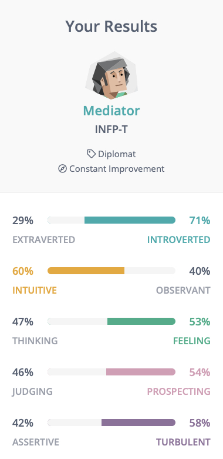
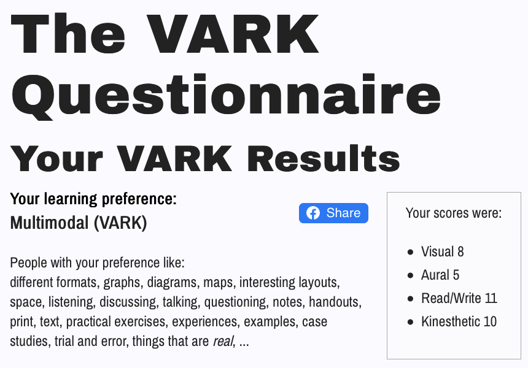
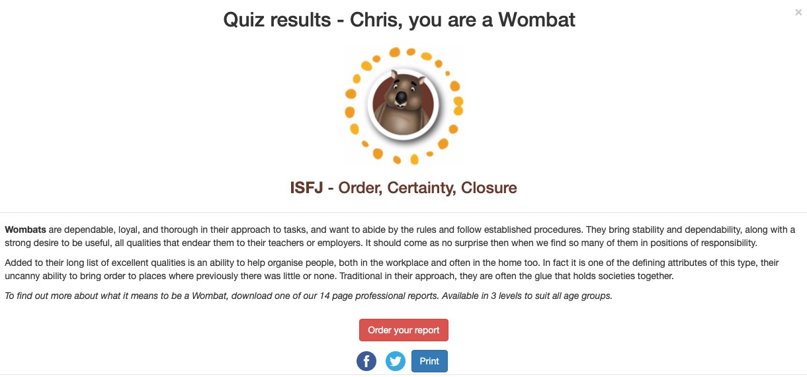
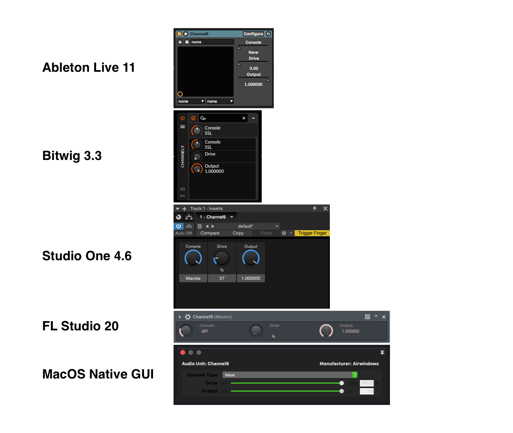
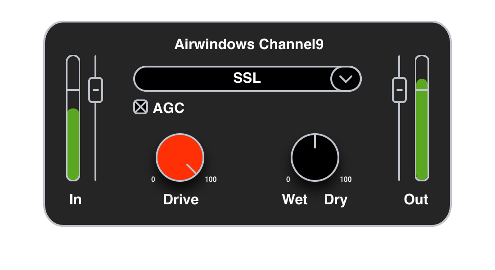

Personal Info
Christopher Smith
s3903477
I was born in Melbourne at the Queen Victoria Hospital (now the QV shopping hub), to Australian parents. I speak English and have very little recall of the French, Italian and Indonesian I learned in school. I’m quite happy to say that I can still introduce myself in French and state that I’m hungry, I’m sure that will come in handy one day. I completed Year 12 in 2001 and studied Audio Engineering at SAE College in 2004.
My hobbies include creating digital art, making music on my computer and playing video games. I try to maintain some level of fitness by making irregular visits to the gym. I regularly tune in to the Ultimate Fighting Championship events and have recently resumed watching a bit of the footy now that the Richmond Tigers are performing more consistently.
Interest in IT
What is your interest in IT?
My interest in IT is quite varied. I enjoy reading about the new technologies that are constantly being developed and pondering what the impact of IT on our lives might be in the not-too-distant future. Personally, my interests are in the creative aspects of using IT and computers. I enjoy creating art, music and more recently websites and their design.
When did your interest in IT start?
My interest in IT began through using gaming consoles, like the Nintendo Entertainment System (NES) and computers in my youth. I fondly recall playing Kid Icarus on my NES and adventure games such as Space Quest & Police Quest on an old PC. In high school I learned touch typing which greatly increased my efficiency when performing tasks on computers, the biggest hinderance to this is that I still use my left hand for controlling the mouse. In my late teens I learned to build PCs, optimising the builds for the purpose of creating music. Although I still enjoying gaming, my interests now are more focused on using computers to build websites and for creative purposes such as art and music. I quite like the idea of being able to build something without getting your hands dirty.
Was there a particular event or person that sparked your interest?
If I was to pick an event that sparked my interest it would be playing video games when I was younger. Now that I know a little more about how computers and code work, it amazes me how programmers were able to create such entertaining games with such limited resources. I was never really inspired in my youth by a particular person, but as I’ve grown a little older, I’ve found the work done by Silicon Valley pioneers like Bill Gates, Steve Jobs and Steve Wozniak to be very inspiring. Reading about the work they did to bring computers into the mainstream and at such a young age is nothing short of incredible, and again, doing it all with what we in the current day consider to be very limited resources and computing power.
Outline your IT experience.
Except for one or two jobs in my career, I have always been sat at, or had a need to use a computer. In the past, I used MS Excel to source and manipulate data for forecasting workloads and staffing requirements based off those forecasts. Learning and applying Excel formulas sparked an interest in coding, and later web development. In 2015 I worked at a tech start-up where I was responsible for user acceptance testing, creating technical documentation, user guides, and video tutorials on how to use the product.
I started my current role doing Communications work building the multi-technology mess that is the National Broadband Network. My audio engineering knowledge transferred well to learning how optic fibre networks operate. Recently, the company I work for launched another business focusing on digital signage and security systems. Since moving to that side of the business, I have taken on the responsibility for set up and integration of surveillance equipment and digital signage into existing networks and troubleshooting any issues that arise in the process. After the installations are completed, and when the need arises, I provide our customers with tech support. I do a bit of web development on the company’s WordPress site which I find quite frustrating at times. It would be great to overhaul it, speed it up and add Shopify to it in the near future.
Why did you choose to come to RMIT?
I chose to study at RMIT due to a sense of overwhelming dread I was greeted with in January as I stared at the ceiling in my room upon waking up. I got out of bed and checked out a few courses online and made a call to Open Universities. Within two hours of feeling that initial dread I had enrolled in the introductory modules for this degree. Relief ensued.
As I have never really specialised in any area of IT, I would like to get a better knowledge about the basics and then focus on the areas that pique my interest. I quite enjoy coding the design and front-end functionality of websites, so I would like to complement that with some stronger understanding of the back end, SQL, NodeJS and the like. Hopefully, this will go some way in me being able to overhaul my company’s website as outlined above.
What do you expect to learn during your studies?
I expect to learn more about programming languages and acquire some level of proficiency in them. Learning C++, NodeJS, Python and PHP would be great from what I know of their application and usefulness. Having a keen interest in audio and music production, I would like to apply C++ to digital signal processing routines to create audio plugins.
Ideal Job

Position Description
The position is for a Software Developer. The job requires ongoing development, extension and maintenance and of the existing code base across different platforms such as Windows and MacOS, and plugin formats (AU/VST2/VST3/AAX). The job will require an awareness of current and upcoming hardware and software changes that may affect the products and implementing fixes or new code to accommodate these changes in a timely manner. The aspects of this role that are appealing to me include the ongoing learning and problem solving that comes with programming, and the creative aspects of programming, audio, music and graphics. It would be great to work alongside people who share an enthusiasm for audio and technology. A balance of autonomy and working in a team is also attractive to me.
Skills, qualifications and experience required for the position
The skills and experience required for the role include C++ programming, knowledge of graphics APIs and audio plug-in APIs. The applicant is also required to have experience developing cross-platform products for MacOS and Windows and an understanding of audio engineering and audio signal processing routines.
Skills, qualifications and experience you currently have
Having been in the workforce for around 20 years I have a strong work ethic and solid written and verbal communication skills. I possess an understanding of audio signal processing and existing audio technology gained through completing an audio engineering diploma. I keep my understanding of the industry up to date by monitoring new products and services in dedicated audio technology and music forums. I have close to 20 years of experience in creating and producing music on computers. I have a basic knowledge of programming concepts, issue tracking, software testing, and can produce technical documentation such as user guides.
A plan describing how you will obtain the skills, qualifications and experience required for the position, building on those you have now
The skill gap I see myself having is C++ knowledge, familiarity with Git/GitHub and experience working within a team of software developers. I would need to learn how to implement audio/digital signal processing designs in C++ and learn how build GUIs that hook into useful controls within the code. These are all skills I believe I can acquire through completing this degree at RMIT.
Personal Profile
Test Results
16 Personalities - INFP

VARK - Multimodal

AusIDentities - Wombat

What do the results of these tests mean for you?
These personality tests are a pretty accurate representation of who I am. I’m introverted and prefer to have a structured approach to completing tasks. The VARK test accurately sums up my preferred methods of learning. I generally prefer to learn by reading and then applying information. However, depending on the context, some other formats such as video can be much more suited to conveying the required information and also provide a demonstration at the same time.
How do you think these results may influence your behaviour in a team?
When working in a team I try to focus on what work needs to be done and how the team aims to complete it. I like to approach work in a methodical manner and believe this would assist the group in planning and assigning work. As an introvert I need to make an effort to make sure I’m contributing to the conversation.
How should you take this into account when forming a team?
When working in a team I am happy to do whatever it takes to get the project completed and am not particularly fussy about what work I’m assigned to. I prefer that everyone has an equal portion of work to complete and are willing to help others if they complete work ahead of other team members. Seeking out fellow team members who appreciate a similar approach to completing work would be advantageous.
Project Idea
Overview
My project idea is to create custom GUI interfaces for Airwindows [1] AU/VST (Audio Units /Virtual Studio Technology) plugins. Airwindows is a one man show run by mastering engineer and programmer, Chris Johnson. The plugins Chris creates currently load a default interface within Digital Audio Workstation (DAW) applications. These interfaces, whilst functional are quite bland in comparison to some of the more polished plugins produced by other companies and lack important visual feedback such as metering. Chris has recently open sourced a selection of his plugins on GitHub [2] so the bulk of the project would revolve around creating the graphic components and adding code to link those graphics to controls which are exposed to the user.
Motivation
The project would be useful as adding features such as graphic user interfaces, and additional controls such as input and output control, and metering add more value to the plugins. My main motivation for this project is to create a visual identity for the Airwindows brand and that is consistent across different OSes and DAWs. I envision being able to charge a small fee for usage of the plugins with the added GUI and extra features. This revenue stream would allow for ongoing maintenance and hopefully a little extra income. I would be happy to split any profit with Chris too. He currently provides his plugins for free and generates income through Patreon supporters. I would be chuffed to be able to play a part in enabling him to continue providing his work to the audio production community.
Description
The features I propose to add to the existing products are a graphic user interface (GUI), metering, input/output gain controls, automatic gain compensation and wet/dry controls. The GUI would replace native sliders, faders and knobs within different Digital Audio Workstations (DAWs). The addition of metering will provide important visual feedback that the current plugin interfaces are lacking. Below are more detailed explanations of the proposed features and their benefits.
Graphic User Interface
Creating a consistent user interface for the brand will add to the user’s sense of engagement and enjoyment when using a plugin. This will also be of benefit to users who use multiple DAWs as each DAW has its own native implementation of how to display a GUI-less plugin. Modern plugins are also resizable, giving users the ability to choose how much screen real estate the interface takes up. In lieu of providing a fully resizable interface, options to display the interface at multiples of the default interface size can be added (50%, 75%, 125%, 150%, etc).
Depending on how the GUI is implemented, there is also the possibility for adding functionality that allows users to create their own custom skins or colour schemes for the plugins. It’s often said in audio communities that listening comes first and that you don’t mix audio with your eyes. Whilst true, eye candy is visually pleasing and can play a big part in providing a product that aids user efficiency and ergonomics. Providing an attractive GUI will also go some way in catching the attention of potential new users.
Below are examples of the native GUIs that are created by several DAWs and a mock-up I have created that includes the added functionality outlined in the remainder of this section.
Native GUIs
Mock-Up GUI
Input/Output Gain
Input Gain and Output Gain knobs/faders allow a user to adjust the incoming and outgoing signal level. In some instances, the effect of the processor is level dependent. This means that the behaviour of the processor can drastically change depending on the level of the incoming signal. As louder signals are often considered better, it’s considered good practice to have the outgoing signal be equal to the level of the incoming signal. This allows mixers to better gauge the effect of the processor on the program material without changes in level affecting their judgement.
Automatic Gain Compensation
This feature would be exposed to the user as a checkbox and will automatically match the input and output levels. When active this feature would override the Output Gain control causing it to have no effect on the signal.
Metering
The addition of metering will allow users to visually monitor what changes in level occur as a result of applying the plugin to an audio signal. The addition of gain reduction metering would benefit compressor and gate plugins, showing the user the amount of level change being applied to the signal by the plugin based on its current settings. User calibration of the metering allows customisation of how much headroom is provided for the signal.
Wet/Dry Control
The addition of this knob allows blending the amount of processed signal with the incoming, unprocessed signal. This provides the user with a wider palette of effects to apply to their signal.
Tools & Technologies
Hardware
The only hardware required to complete the project is a PC. The computer will be used to create graphics, create and compile code, and test the plugins.
Software
Pixelmator Pro
A graphics program to used generate GUI assets. Creating these graphics in SVG format should be useful for resizing the interface.
Sublime Text
A text editor for creating and editing C++ code.
Steinberg VST SDK & Apple Audio Unit Frameworks [3] [4]
These frameworks provide the foundation that audio plugins are built upon and will allow the plugin to be recognised by and communicate with a DAW or plugin host.
XCode/Visual Studio
These apps would be used for creating compiling code on different operating systems.
GitHub/GitHub Desktop
This would be used as a place to store and retrieve code.
Skills Required
The skills required to complete this project are programming and graphic design. The software for the GUI will need to integrate with existing controls, new controls such as the Input and Output Gain knobs, display signal level in the meters and control the resizing of the plugin. As the existing software runs on Windows and MacOS I would need to create code that can be compiled for both platforms. As the plugins are coded in C++ I would need to start learning C++ to understand where the controls are exposed, how they work, and how I can target them with the graphic components for manipulation with input devices like a mouse, keyboard, or MIDI controller.
Outcome
The ergonomics and efficiency of using the Airwindows plugin suite is enhanced by placing reusable controls, such as metering and input/output faders, in the same place on the interface and controls unique to a specific plugin in the middle of the GUI. Users can now perform simple tasks such as level adjustment or level monitoring without needing to open and close the interface of another plugin. Adding these features removes the need to add extra plugins to a processing chain and will reduce the amount of CPU processing power required to process a signal.
References
[1] Airwindows. 2021. Airwindows | handsewn bespoke digital audio. [ONLINE] Available at:
https://www.airwindows.com/
[2] GitHub. 2021. GitHub - airwindows/airwindows: This contains all the Airwindows audio open source code.
https://github.com/airwindows/airwindows
[3] 3rd-party developers support & SDKs | Steinberg. [ONLINE] Available at:
https://new.steinberg.net/developers/
[4] Apple Developer Documentation. 2021. Apple Developer Documentation. [ONLINE] Available at:
https://developer.apple.com/documentation/audiounit